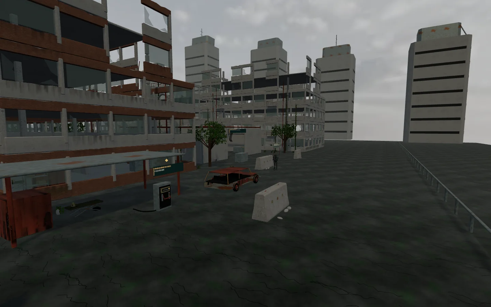
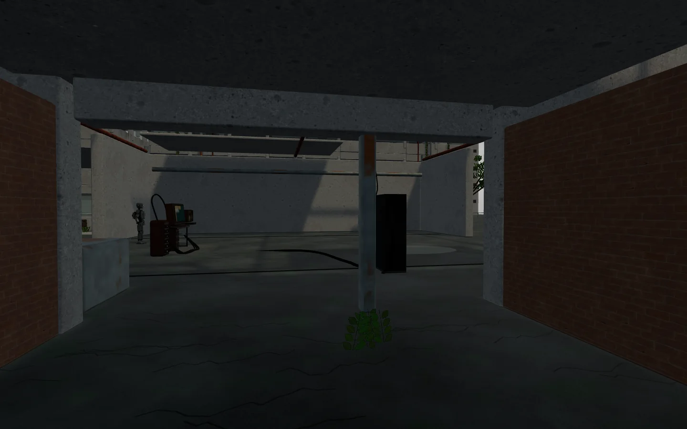
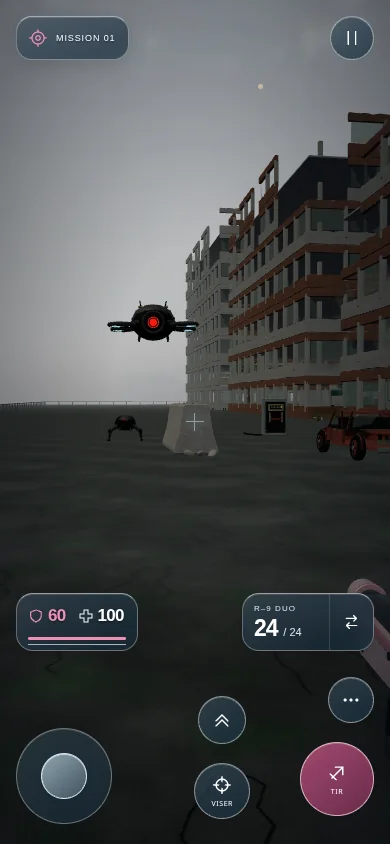

Choisir la cour du convoi ou traverser l’aile technique. Isoler l’alimentation, rejoindre l’annexe et retrouver le journal humain. Le rétablissement du courant alerte les machines.



Ce lot vise 6–8 minutes de découverte, à mesurer en partie. Les 20–25 minutes concernent la mission complète à construire progressivement. GHJU, LYLU et les étapes du book sont conservés.